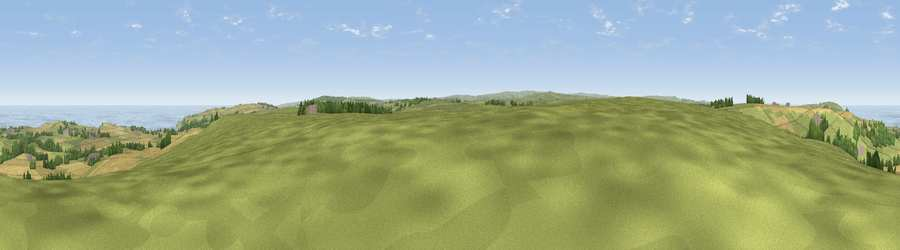

Viewpoint near Roxby
#1481 in England · top 9% of its area beats it · near RoxbyThe view, rendered

A 360° render of this exact spot computed from the terrain model, tree cover and land cover — summer colours, afternoon light, calibrated against photographs of famous viewpoints. Real trees, hedges and buildings will differ in detail.
The panorama
Grey silhouette: terrain skyline in each direction (720 bearings, Earth curvature and refraction included). Dashed green: skyline with trees (+15 m) and buildings (+8 m) as obstacles. Blue strip: how far the ground is visible on each bearing.
Where the view opens
Wedge length = distance to the farthest visible ground on that bearing (vegetation-aware). Rings at 10, 25 and 50 km.
What fills the view
49% grassland · 23% cropland · 19% water · 7% woodland · 1% built-up
Angular shares of the visible panorama (visual magnitude), not map area. Landscape diversity 0.54 (0–1 Shannon).
Key numbers
More beautiful places nearby
The staircase of upgrades: each row has a higher view potential than everything closer. Driving times are estimates from straight-line distance, calibrated against real road routing — check an actual route before setting out.
| Place | Direction | Drive | Score |
|---|---|---|---|
| Viewpoint near Hinderwell | NE · 4 km | ~9 min | 79.5 |
| Beacon Hill | NNE · 4 km | ~9 min | 82.3 |
| Viewpoint near Easington | NNW · 6 km | ~12 min | 86.9 |
| Viewpoint near Easington | NNW · 7 km | ~14 min | 90.2 |
| The Knoll | SSW · 444 km | ~416 min | 91.0 |
54.51736, -0.79929 · source: screening · position refined by local search. Computed location — check access rights before visiting.